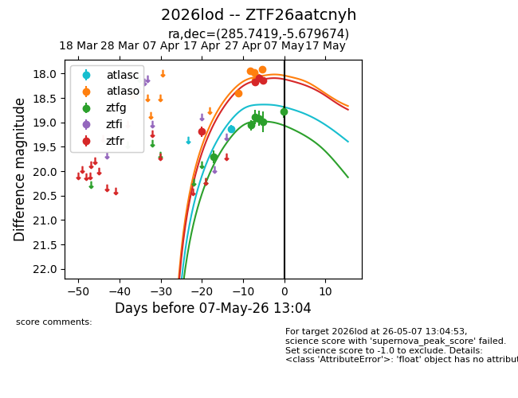
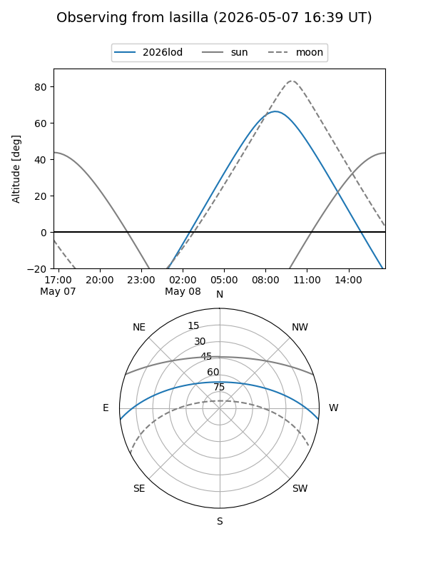
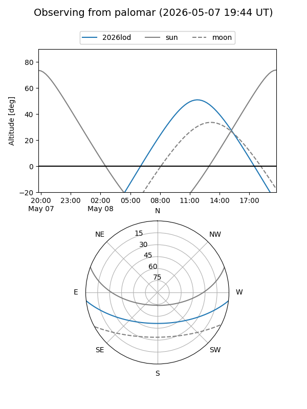
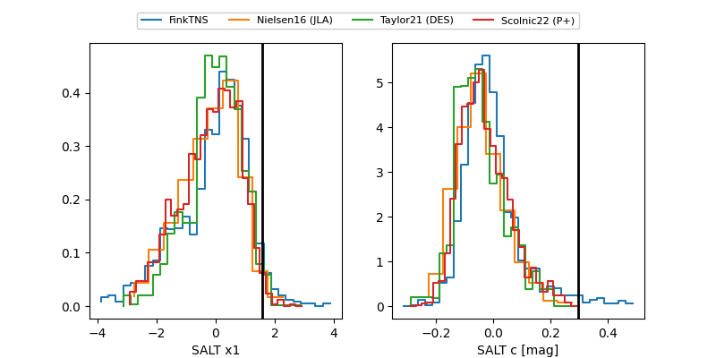

2026lod
Target 2026lod at 2026-05-07 13:06
Aliases and brokers:
FINK: link
Lasair: link
ALeRCE: link
TNS: link
YSE: link
alt names
ZTF26aatcnyh (ztf,fink_ztf)
2026lod (tns,yse)
Coordinates:
equatorial (ra, dec) = 285.7419,-5.67967
equatorial (HMS+DMS) = 19:02:58.05,-05:40:46.82
galactic (l, b) = (29.1749,-5.14414)
Flags:
Photometry:
last atlasc=19.13, atlaso=17.92, ztfg=18.78, ztfr=18.15
1 atlasc, 6 atlaso, 6 ztfg, 4 ztfr detections
Lightcurve

Visibility


Additional plots
